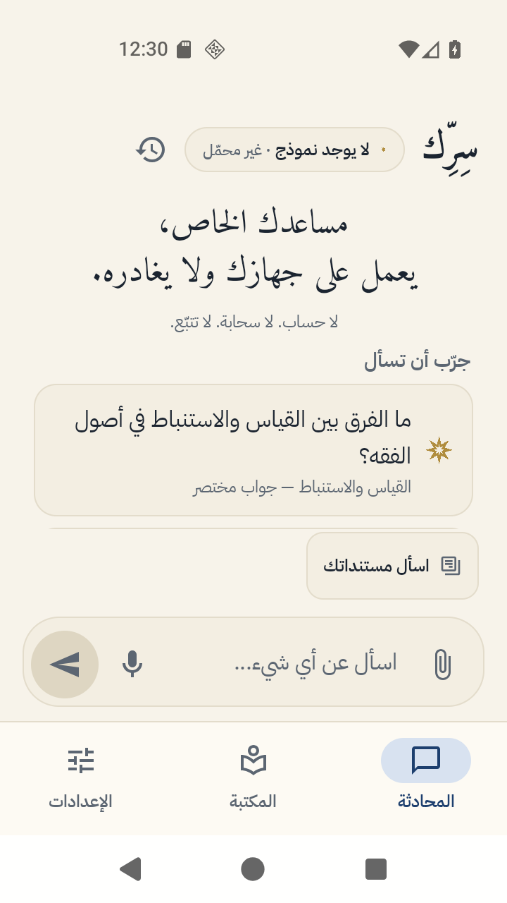
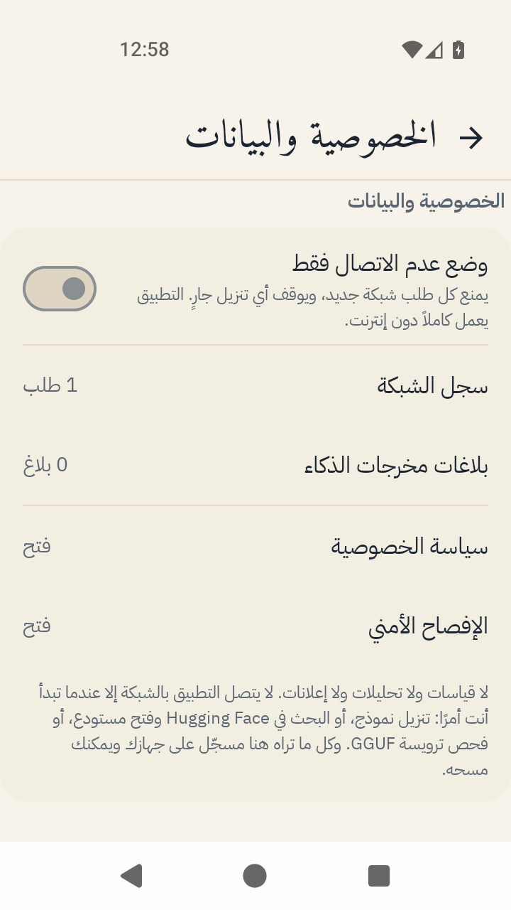

سِرِّك
مساعدك الخاص،
يعمل على جهازك ولا يغادره.
سِرِّك يُشغّل نموذجًا لغويًا حقيقيًا وإملاءً عربيًا وبحثًا في مستنداتك على هاتفك. بلا حساب، بلا سحابة، بلا تتبّع؛ وكل طلب شبكة تبدأه أنت: تنزيل نموذج، أو بحث في Hugging Face، أو فحص محدود لترويسة ملف.

- 1مفتاح دون اتصال
- 2النموذج على الجهاز
- 3واجهة عربية أولًا
أول عشر دقائق
أربع خطوات مرقّمة تنقلك من تثبيت جديد إلى مساعد يجيب بلا شبكة. كل لقطة أدناه من نسخة الإصدار على محاكٍ حقيقي، لا من تصوّر تصميم.
-
أحضِر نموذجًا — أو ابدأ بالعرض
تقترح شاشة الترحيب نموذجًا يناسب هاتفك وتنزّله مع إمكانية الاستئناف والتحقق من البصمة. لا يوجد نموذج مضمَّن: كل مدخل في الكتالوج يعرض رخصته قبل التنزيل.
موصى به لجهازك، ورخصته ظاهرة قبل التنزيل

-
اسأل بالعربية وشاهد الإجابة تُكتب
المحادثة تعمل على الجهاز عبر llama.cpp. أوقف الإجابة في منتصفها، أو أعد التوليد، أو ابدأ محادثة جديدة؛ والنص يبقى بعد إغلاق التطبيق ويُصدَّر بصيغة Markdown.
سرعة tok/s مقيسة لا مقدَّرة

-
أملِ بدل أن تكتب
Whisper على الجهاز ينسخ العربية أو الإنجليزية. يعرض شريط التسجيل مؤقتًا مباشرًا أثناء الاستماع، ويُضاف النص إلى مربع الكتابة ولا يُرسَل وحده، والصوت لا يغادر الهاتف.
جسر الكتابة: الكلام يصل نصًا قابلًا للتعديل

-
تحكّم في الشبكة
فعّل «دون اتصال فقط» فلن يستطيع التطبيق فتح أي اتصال، بما في ذلك تنزيلات النماذج. وسجل الشبكة يعرض الطلبات التي حدثت فعلًا على هذا الجهاز، بحد 50 سجلًا ولا يُرفع أبدًا.
لا طلبات في الخلفية: كل طلب شبكة تبدأه أنت

ماذا في العلبة
كل ما يلي داخل التطبيق نفسه بترخيص Apache-2.0. لا شيء يحتاج حسابًا، ولا شيء يتصل بالخارج.
-
محادثة محلية
إجابات بثّية من نموذج GGUF، ومحادثات متعددة مع بحث وإعادة تسمية، وعرض Markdown، وتعليمات وتسلسلات إيقاف لكل محادثة.
-
إملاء عربي وإنجليزي
sherpa-onnx Whisper على الجهاز، وشريط تسجيل بمؤقت مباشر، ونص ينتظر في مربع الكتابة حتى ترسله أنت.
-
إجابات من مستنداتك
استيراد PDF وDOCX وEPUB وMarkdown والنصوص، وفهرسة محلية، وإجابات بمراجع تفتحها — التضمينات مع BM25 عربي.
-
إدارة النماذج
كتالوج منسّق بتوصيات حسب الجهاز (بما فيها فئة 2 غ.ب)، وتنزيلات قابلة للاستئناف ومتحقَّقة من بصمتها، ومدير مساحة، واستيراد من Hugging Face.
-
التحكم بالمحرّك
الحرارة وtop-p وtop-k ومعاقبة التكرار وحجم السياق وقالب المحادثة والتعليمات — طبقات بيانات يمكن إثبات قيمها الفعلية بسطر سجل واحد.
-
أسطح الخصوصية
فرض وضع عدم الاتصال، وسجل شبكة لكل طلب، وبلاغات محلية لمخرجات الذكاء الاصطناعي مع خطوة مشاركة صريحة، وحالات صريحة بدل الروابط الميتة.
مُتحقَّق منه، لا مُدَّعى
مرشح الإصدار مغطى باختبارات مُلتزم بها وبوابات قابلة للتكرار. هذه أرقام يدافع عنها المستودع.
- اختبارات JVM 560 0 فشل في 9 وحدات، نفس المجموعة التي يشغّلها CI
- التقييم العربي 24/24 تطبيع وتقسيم جمل وBM25 وضوابط سلبية
- Android lint 0 أخطاء 36 تحذيرًا مُراجَعًا، بلا كتم لهذا السطح
- طلبات الشبكة عند الخمول لا شيء السجل يعرض تنزيلات تبدأها أنت فقط
- توقيع APK v2 بصمة الشهادة 4537 ECEB 9952 AC90 … تحقّق بـapksigner
- الاعتماديات 22 CycloneDX 1.5 مولَّد من سجل التراخيص المضمَّن
خصوصية يمكن التحقق منها، لا قراءتها فقط
وعد الخصوصية يساوي قيمة دليله. سِرِّك يعلن نقاط اتصاله في الإعدادات، ويسجّل الطلبات التي حدثت فعلًا، ويعطيك مفتاحًا يوقف التطبيق عند المقبس.
اقرأ سياسة الخصوصية كاملة-
بلا تتبّع، إطلاقًا
لا تحليلات، ولا خدمة تقارير أعطال، ولا إعلانات، ولا حساب. لا يوجد خادم يستقبل محادثاتك أو مستنداتك أو بلاغاتك.
-
سجل شبكة على الجهاز
كل طلب حدث فعلًا يظهر في سجل محلي محدود — كُتب لك، ولا يُرفع أبدًا، ويُحذف مع بيانات التطبيق.
-
عدم الاتصال يُفرَض أولًا
يُفحص المفتاح قبل فتح أي مقبس، ويلغي التنزيل الجاري بدل أن يضعه في الانتظار.
-
التخزين خاص بالتطبيق
المحادثات والمستندات والتضمينات والنماذج والإعدادات في تخزين التطبيق الخاص؛ والمشاركة تحدث فقط عبر منتقي أندرويد الذي تستدعيه.
نزّل وتحقق
ملف APK المنشور من صنف libre موقَّع بشهادة المشروع ومبني من وسم 1.0.0-rc2. ميزات 1.1.0 الموصوفة في هذه الصفحة ليست في ذلك البناء بعد: إصدارها الموقَّع ما زال قيد التوقيع. يمكنك التحقق من البناء المنشور قبل التثبيت.
-
احصل على APK الموقَّع
افتح أحدث إصدار على GitHub ونزّل ملف libre الموقَّع 1.0.0-rc2 (نحو 139 MiB، شامل arm64-v8a وx86_64).
-
تحقق من الشهادة
شغّل apksigner verify --print-certs وقارن SHA-256 بالبصمة أدناه. وبصمات الملفات في ملاحظات الإصدار.
-
ثبّت واختر نموذجًا ثم اذهب دون اتصال
يلزم أندرويد 9 أو أحدث. اختر نموذجًا في الترحيب أو ابدأ بمحرّك العرض، ثم فعّل وضع عدم الاتصال حين تجهز.
أين نُشر
الحالة الصريحة أفضل من شارة ليست صحيحة بعد.
- إصدارات GitHub متاح ملف libre موقَّع 1.0.0-rc2 للتثبيت اليدوي؛ إصدار 1.1.0 الموقَّع قيد الانتظار
- F-Droid قيد الإعداد وقت تشغيل sherpa-onnx المضمَّن مسبقًا يحتاج بناءً من المصدر في وصفة F-Droid
- Google Play اختبار مغلق قريبًا حزمة Play موجودة وموقَّعة؛ والقائمة تنتظر الاختبار المغلق
أسئلة يطرحها الناس فعلًا
هل يعمل حقًا دون اتصال؟
نعم. بعد استيراد نموذج أو تنزيله، تعمل المحادثة والإملاء والبحث في المستندات والإعدادات بلا شبكة. ووضع عدم الاتصال يمنع كل طلب ويلغي التنزيل الجاري.
هل هو مجاني؟ وأين المصيدة؟
سِرِّك برنامج حر بترخيص Apache-2.0، بلا حسابات ولا إعلانات ولا تتبّع. النماذج غير مضمَّنة وقد تحمل رخصًا خاصة؛ والنماذج المقيّدة تحتاج رمز Hugging Face خاصًا بك يبقى في الذاكرة فقط.
ما الهواتف المدعومة؟
أندرويد 9 (API 28) أو أحدث على arm64. نسخة x86_64 للمحاكي والتطوير. وينبّهك التطبيق قبل تنزيل يترك مساحة ضئيلة.
من أين تأتي النماذج؟
كتالوج منسّق بتوصيات (Qwen2.5، وLFM2.5 350M لهواتف 2 غ.ب، ونماذج GGUF أخرى)، أو استيراد ملف GGUF محلي، أو استيراد مستودع من Hugging Face. رخصة كل نموذج تُعرض قبل التنزيل، ولا شيء مضمَّن.
لماذا حجم APK نحو 139 MiB؟
وقتا التشغيل الأصليان llama.cpp وsherpa-onnx مبنيان داخل التطبيق ليعمل بلا تنزيلات إضافية. أما أوزان النماذج فمنفصلة وقد تبلغ مئات الميغابايت.
كيف أتأكد أن الادعاءات صحيحة؟
المصدر وسجلات البناء والاختبارات ولقطات الشاشة وتوقيعات الإصدار علنية في هذا المستودع. والموقع نفسه مولَّد من بيانات مُلتزم بها وبلا أي سكربتات خارجية.
اقرأ السجل
يحتفظ المشروع بسجلات بناء علنية: ما بُني، وكيف تحقّقنا منه، وما زال محدودًا.
- سجلات البناء 20 وثيقة، من هيكل M1 إلى قائمة الإطلاق
- البنية الوحدات ونظام الإضافات والخانات المُنمّطة
- قائمة الإطلاق ما أُنجز وما ينتظر الحسابات
- نظام التصميم گِريه والحبر: الألوان والخطوط وRTL والحركة